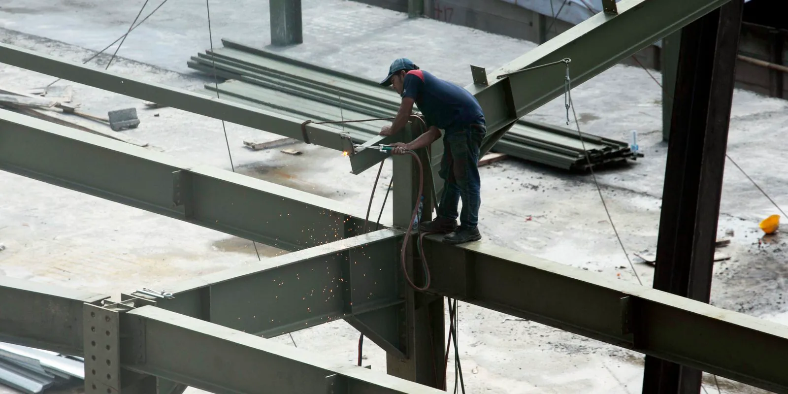
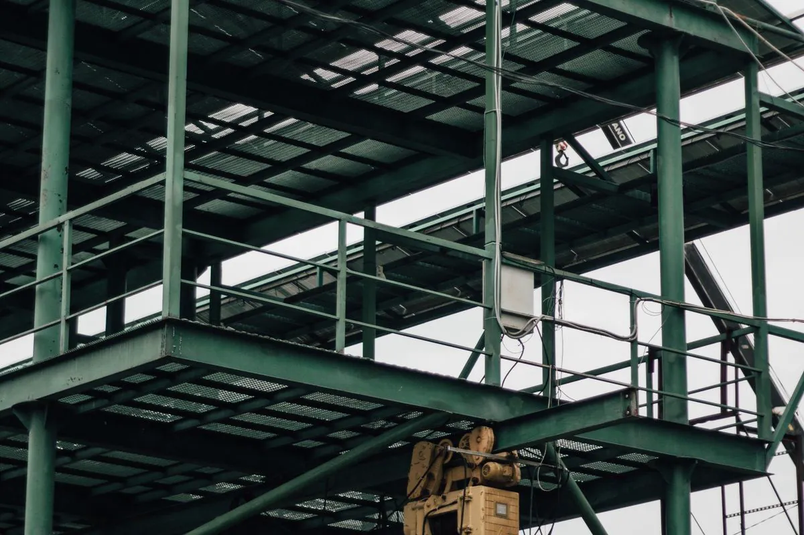
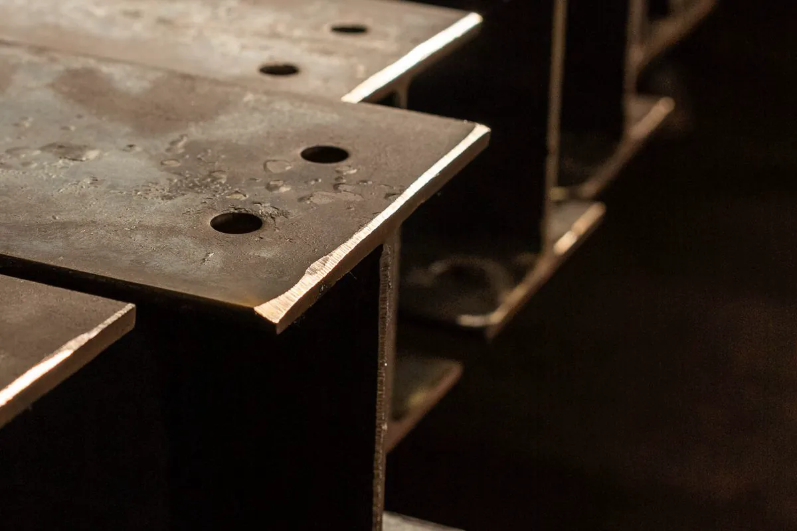
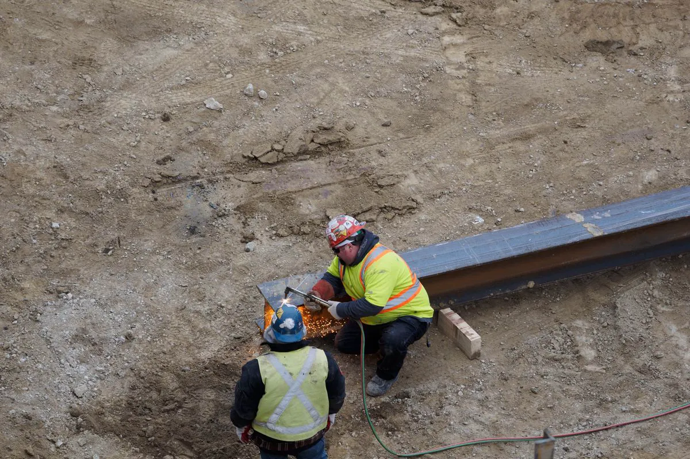

Mais usada
Mais usada
Steel deck (laje mista)
Chapa galvanizada nervurada vira fôrma e armadura. Pouco ou nenhum escoramento, obra limpa e rápida.
Calcular
Montamos o esqueleto de aço da sua laje — pilares, vigas e fôrma de aço incorporada — em casa, sobrado, loja, mezanino e ampliação. Plano de montagem, equipe em NR-35 e ART registrada no CREA-ES.
Estrutura metálica para laje é o conjunto de pilares e vigas de aço que sustenta o piso de um pavimento. Sobre as vigas vai a laje: normalmente steel deck (chapa de aço nervurada que serve de fôrma e fica incorporada ao concreto), laje treliçada ou laje alveolar. A Axial Engenharia monta essa estrutura em Vitória e na Grande Vitória, com ART.
Nosso trabalho é a montagem: receber e conferir as peças, conferir a base, içar, alinhar, apertar e soldar as ligações, fixar a fôrma de aço e deixar tudo nivelado e liberado para a concretagem. Quando você precisa, entregamos também o projeto estrutural e o material — a fabricação das peças fica com o fabricante que você escolher.

Da ligação viga–pilar à armadura sobre a fôrma: as etapas que o cliente vê na obra.




Informe as medidas e o uso. A conta mostra a ordem de grandeza para você conversar com o projetista — não substitui o cálculo estrutural.
Montamos a estrutura para as quatro soluções mais usadas em obra residencial e comercial.
Mais usada
Chapa galvanizada nervurada vira fôrma e armadura. Pouco ou nenhum escoramento, obra limpa e rápida.
CalcularVigotas treliçadas com EPS ou lajota apoiadas na aba da viga metálica. Precisa de escoramento.
Comparar
Comercial
Placas protendidas pré-fabricadas vencem vãos grandes; exigem guindaste e apoio bem nivelado.
Comparar Piso seco
Piso seco
Chapa xadrez ou painel sobre as vigas, sem concreto. Comum em mezanino e área técnica.
Ver mezanino| Laje | Escoramento | Vão entre vigas (usual) | Peso próprio | Quando escolher |
|---|---|---|---|---|
| Steel deck | Pouco ou nenhum | 2 a 3 m sem escora | Médio | Obra rápida, casa, sobrado, loja, prédio |
| Treliçada (vigota + EPS) | Sim | Vigotas de 3 a 6 m | Médio | Residência e ampliação com mão de obra local |
| Alveolar protendida | Não | Placas de 5 a 12 m | Médio a alto | Galpão de dois pisos, comércio, vãos livres |
| Piso seco (chapa/painel) | Não | 1 a 1,5 m entre barrotes | Baixo | Mezanino, depósito leve, área técnica |
Faixas típicas de mercado. O vão e a espessura de cada caso saem do projeto estrutural e da tabela do fabricante da laje.
Toque em cada elemento para ver função, material usual e o que conferimos na montagem.
Liga um pilar ao outro e recebe as vigas secundárias. Costuma ser perfil I laminado (série W), escolhido pela altura d que o vão pede.
Fica entre as principais e define o vão da fôrma. É o espaçamento dela que decide se a laje precisa ou não de escora.
Chapa galvanizada com nervuras trapezoidais. Montada sobre as vigas, recebe tela soldada e concreto; depois da cura trabalha junto com ele. Fixamos a fôrma nas vigas, fechamos as bordas e recortamos as aberturas.
Pino com cabeça (ou perfil U curto) preso na mesa da viga. Faz a viga e a laje trabalharem juntas — a viga mista — e permite vigas mais baixas. Só entra quando o projeto especifica.
Leva a carga da laje até a fundação. Chega à obra com a placa de base furada e é fixado nos chumbadores; o nível da base é conferido antes de qualquer içamento.
Barras ou cantoneiras em X que impedem a estrutura de balançar com vento e durante a montagem. Na sequência certa, um vão contraventado é fechado primeiro e os demais se apoiam nele.
Quer entender cada perfil e cada tipo de aço em detalhe? Veja o guia de treliças, perfis e aços estruturais, com calculadora de peso.
Locação, distância e nível conferidos contra o projeto antes do primeiro pilar.
Içamento pela sequência do plano, com um vão contraventado fechado primeiro.
Aperto controlado, soldas de campo previstas, prumo e cota registrados.
Fixação da fôrma, bordas, recortes e conectores — tudo liberado para o concreto.

A estrutura metálica é leve e monta rápido, por isso é a escolha comum para subir um andar em casa pronta, fechar uma área de garagem ou criar um terraço. O que não pode faltar: um engenheiro verificar se paredes, pilares e fundação existentes aguentam a carga nova — ou projetar pilares metálicos próprios até uma fundação nova.
Para o pavimento inteiro em aço, veja sobrado em estrutura metálica.
É uma laje mista de aço e concreto: uma chapa de aço galvanizado com nervuras trapezoidais é apoiada sobre as vigas metálicas, recebe tela soldada e é concretada. A chapa serve de fôrma durante a obra e fica incorporada à laje depois da cura, trabalhando junto com o concreto.
Em vãos usuais entre vigas, de cerca de 2 a 3 metros, a fôrma costuma dispensar escoramento. O limite exato depende da altura da nervura, da espessura da chapa e da espessura da laje, e sai da tabela do fabricante e do projeto estrutural.
Dá, desde que um engenheiro confirme que paredes, pilares e fundação existentes suportam a carga nova, ou projete pilares metálicos próprios até a fundação. Sem essa verificação não se monta nada: é o ponto em que ampliação costuma dar errado.
Nosso serviço é a montagem da estrutura metálica: pilares, vigas, fôrma de aço, fixações, conectores e arremates. A concretagem é feita pela equipe de obra civil da sua obra; entregamos a fôrma conferida e liberada para concretar.
Em geral sim. As nervuras da fôrma tiram concreto da parte que menos trabalha, e o conjunto de vigas de aço pesa bem menos que vigas de concreto equivalentes. Isso reduz a carga na fundação, o que pesa muito em ampliação.
Sim. A montagem é executada sob responsabilidade de engenheiro habilitado, com ART de execução registrada no CREA-ES, e entregamos os registros de prumo, nivelamento, ligações e fixação da fôrma.
Mande o projeto (ou croqui), fotos e o endereço da obra. Retornamos com o escopo no mesmo dia útil.
Sede em Vila Velha. Montagem em obras de Vitória, Vila Velha, Serra, Cariacica, Viana, Guarapari e Fundão, e sob consulta em Anchieta, Aracruz e Linhares.
Esqueleto de aço para casa de dois ou três pavimentos.
Ver sobrado →Piso extra dentro de galpão, loja ou casa.
Ver mezanino →Pórticos, treliças, terças e telhas.
Ver galpão →Estrutura de qualquer fabricante, com ART.
Ver montagem →Inspeção, ensaio e projeto conduzidos sob códigos reconhecidos no Brasil e no exterior, por profissionais qualificados nos organismos de certificação da área.
 Inmetro
Instrumentos de medição com calibração rastreável à Rede Brasileira de Calibração.
Inmetro
Instrumentos de medição com calibração rastreável à Rede Brasileira de Calibração.
 ASME
Código ASME Seção VIII no cálculo e na avaliação de vasos de pressão e caldeiras.
ASME
Código ASME Seção VIII no cálculo e na avaliação de vasos de pressão e caldeiras.
 ABNT
Normas NBR aplicáveis a cada laudo técnico, ensaio e projeto estrutural.
ABNT
Normas NBR aplicáveis a cada laudo técnico, ensaio e projeto estrutural.
 Abendi
Ensaios não destrutivos executados por profissional qualificado pelo SNQC.
Abendi
Ensaios não destrutivos executados por profissional qualificado pelo SNQC.
 CMSE
Certified Machinery Safety Expert aplicado à adequação de máquinas à NR-12.
CMSE
Certified Machinery Safety Expert aplicado à adequação de máquinas à NR-12.
Logotipos exibidos como referência às normas, códigos e qualificações aplicados nos serviços.